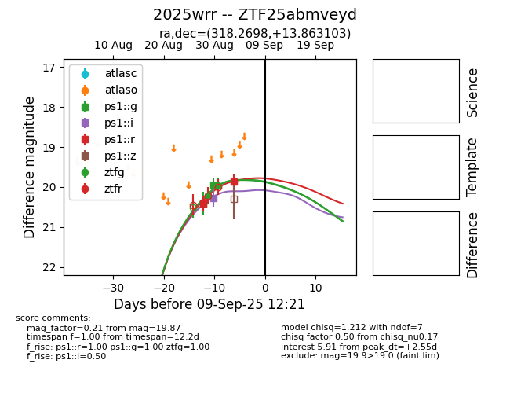

FINK: ZTF25abmveyd
Lasair: ZTF25abmveyd
ALeRCE: ZTF25abmveyd
TNS: 2025wrr
YSE: 2025wrr
ZTF25abmveyd (ztf,fink)
2025wrr (tns,yse)
equatorial (ra, dec) = (318.2698,+13.86310)
galactic (l, b) = (63.6281,-23.04214)

last ps1::g=19.96, ps1::i=20.28, ps1::r=19.84, ztfg=20.00, ztfr=19.78
2 ps1::g, 1 ps1::i, 2 ps1::r, 4 ztfg, 1 ztfr detections